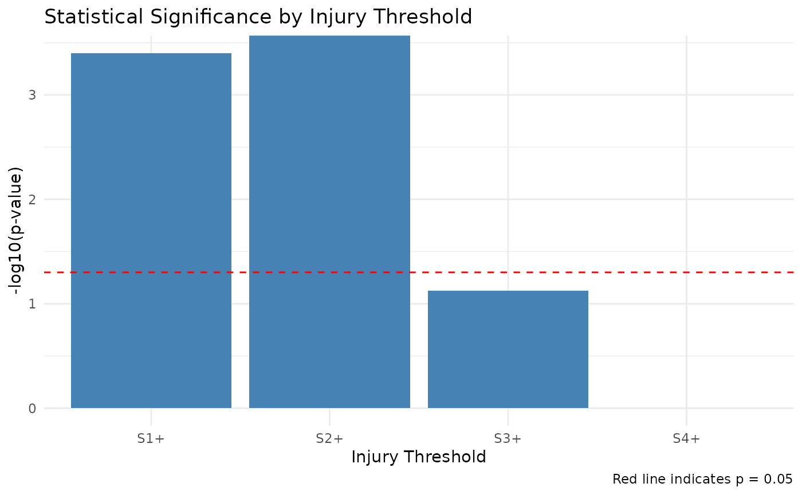

In this article we illustrate how to conduct an RSCABS test and compare results using the relevant RSCABS functions in this package and those from the implementation in the archived package RSCABS. The steps behind the RSCABS test are decsribed and explained.
Example Usage of the RSCABS functions in drcHelper
The function in drcHelper is run_threshold_RSCA
and run_all_threshold_tests. The latter performs the
Rao-Scott adjusted Cochran-Armitage trend test by slices (for multiple
injury thresholds) and providing a comprehensive analysis of
dose-response relationships at different severity levels. It also
outputs an invisible components including all the detailed interim
results for each tested threshold level. A step-down procedure can be
performed using step_down_RSCABS.
# Example data with increasing trend in injury rates
# Create the simulated fish data
sim_data_1<- tibble::tibble(
treatment = c(rep("Control", 8), rep("Low", 4), rep("Medium", 4), rep("High", 4)),
tank = c(paste0("C", 1:8), paste0("L", 1:4), paste0("M", 1:4), paste0("H", 1:4)),
S0 = c(3, 2, 4, 3, 2, 1, 2, 3, 3, 3, 4, 2, 2, 3, 2, 2, 2, 3, 1, 2),
S1 = c(1, 2, 0, 1, 2, 2, 1, 1, 1, 1, 0, 1, 1, 0, 1, 1, 1, 1, 2, 0),
S2 = c(0, 0, 0, 0, 0, 1, 0, 0, 0, 0, 0, 1, 1, 1, 0, 1, 0, 0, 1, 1),
S3 = c(0, 0, 0, 0, 0, 0, 1, 0, 0, 0, 0, 0, 0, 0, 1, 0, 1, 0, 0, 1),
total = c(4, 4, 4, 4, 4, 4, 4, 4, 4, 4, 4, 4, 4, 4, 4, 4, 4, 4, 4, 4)
)
# Ensure treatment is an ordered factor for proper plotting
sim_data_1$treatment <- factor(sim_data_1$treatment,
levels = c("Control", "Low", "Medium", "High"))
# Run two-sided test
two_sided_result <- run_threshold_RSCA(sim_data_1, threshold = 2,treatment_col = "treatment",replicate_col = "tank")
print(paste("Two-sided p-value:", round(two_sided_result$p_value, 4)))
#> [1] "Two-sided p-value: 0.0307"
# Run one-sided test (greater)
greater_result <- run_threshold_RSCA(sim_data_1, threshold = 2, alternative = "greater",treatment_col = "treatment",replicate_col = "tank")
print(paste("One-sided (greater) p-value:", round(greater_result$p_value, 4)))
#> [1] "One-sided (greater) p-value: 0.0153"
# Run one-sided test (less)
less_result <- run_threshold_RSCA(sim_data_1, threshold = 1, alternative = "less",treatment_col = "treatment",replicate_col = "tank")
print(paste("One-sided (less) p-value:", round(less_result$p_value, 4)))
#> [1] "One-sided (less) p-value: 0.8276"
run_all_threshold_tests(sim_data_1,min_score = 0,max_score = 2,direction="less",alternative ="less",treatment_col = "treatment",replicate_col = "tank")
#>
#> result table:
#>
#> Threshold Z_statistic P_value Has_zero_counts Alternative Method
#> 1 S≤0 -0.9445781 0.17243715 FALSE less RSCA (less)
#> 2 S≤1 -2.1613671 0.01533349 FALSE less RSCA (less)
#> 3 S≤2 NA NA FALSE less RSCA (less)
#>
#> Summarized Proportions:
#> Treatment S≤0 S≤1 S≤2
#> 1 Control 0.6250 0.9375 0.96875
#> 2 Low 0.7500 0.9375 1.00000
#> 3 Medium 0.5625 0.7500 0.93750
#> 4 High 0.5000 0.7500 0.87500
#>
#> Alternative Hypothesis:
#> [1] "less"
run_all_threshold_tests(sim_data_1,min_score = 1,max_score = 3,direction="greater",alternative ="greater",treatment_col = "treatment",replicate_col = "tank")
#>
#> result table:
#>
#> Threshold Z_statistic P_value Has_zero_counts Alternative
#> 1 S1+ 0.9445781 0.17243715 FALSE greater
#> 2 S2+ 2.1613671 0.01533349 FALSE greater
#> 3 S3+ NA 0.52574008 TRUE greater
#> Method
#> 1 RSCA (greater)
#> 2 RSCA (greater)
#> 3 Fisher's Exact Test (greater)
#>
#> Summarized Proportions:
#> Treatment S1+ S2+ S3+
#> 1 Control 0.3750 0.0625 0.03125
#> 2 Low 0.2500 0.0625 0.00000
#> 3 Medium 0.4375 0.2500 0.06250
#> 4 High 0.5000 0.2500 0.12500
#>
#> Alternative Hypothesis:
#> [1] "greater"
run_all_threshold_tests(sim_data_1%>%filter(treatment!="High")%>%droplevels(.),min_score = 1,max_score = 3,direction="greater",alternative ="greater",treatment_col = "treatment",replicate_col = "tank")
#>
#> result table:
#>
#> Threshold Z_statistic P_value Has_zero_counts Alternative
#> 1 S1+ 0.2356454 0.4068539 FALSE greater
#> 2 S2+ 1.8130002 0.0349159 FALSE greater
#> 3 S3+ NA 1.0000000 TRUE greater
#> Method
#> 1 RSCA (greater)
#> 2 RSCA (greater)
#> 3 Fisher's Exact Test (greater)
#>
#> Summarized Proportions:
#> Treatment S1+ S2+ S3+
#> 1 Control 0.3750 0.0625 0.03125
#> 2 Low 0.2500 0.0625 0.00000
#> 3 Medium 0.4375 0.2500 0.06250
#>
#> Alternative Hypothesis:
#> [1] "greater"
# Run step-down procedure
result <- step_down_RSCABS(
sim_data_1,
treatment_col = "treatment",replicate_col = "tank",
treatment_order = c("Control", "Low", "Medium", "High"),
alternative = "greater"
)
result
#> Step-Down RSCABS Analysis
#> ========================
#>
#> Parameters:
#> Direction: greater
#> Alternative hypothesis: greater
#> Treatment levels: Control, Low, Medium, High
#>
#> Summary of findings:
#> Step 1 : Included treatments: Control, Low, Medium, High
#> Significant thresholds: S2+
#> Step 2 : Included treatments: Control, Low, Medium
#> Significant thresholds: S2+
#> Step 3 : Included treatments: Control, Low
#> No significant findings
summary_result <- summary(result)
print(summary_result$summary_table)
#> Step Included_Treatments Highest_Treatment Significant_Thresholds
#> 1 1 Control, Low, Medium, High High S2+
#> 2 2 Control, Low, Medium Medium S2+
#> 3 3 Control, Low Low None
#> Min_P_Value
#> 1 0.01533349
#> 2 0.03491590
#> 3 NA
plot(result)
print(result,printLowest = T)
#> Step-Down RSCABS Analysis
#> ========================
#>
#> Parameters:
#> Direction: greater
#> Alternative hypothesis: greater
#> Treatment levels: Control, Low, Medium, High
#>
#> Summary of findings:
#> Step 1 : Included treatments: Control, Low, Medium, High
#> Significant thresholds: S2+
#> Step 2 : Included treatments: Control, Low, Medium
#> Significant thresholds: S2+
#> Step 3 : Included treatments: Control, Low
#> No significant findings
#>
#> Lowest treatment level with significant findings:
#> Treatment: Medium
#> Threshold: S2+
#> P-value: 0.0349Comparison with Joe’s Implementation
Note the p-values are the same for the critical treatment and score combinations. I do think Joe’s implementation has some fault in terms of alternative hypothesis and p-value calculation (It can return 1-p sometimes, not sure why). But I haven’t tried to figured that out.
dat1 <- convert_fish_data(sim_data_1,direction="to_individual",treatment_col = "treatment",replicate_col = "tank" )
dat1 <- (dat1) %>% mutate(score1=as.numeric(factor(score))-1,score2=score1+5) %>% dplyr::select(-c(score)) %>% as.data.frame
## Note runRSCABS expects more than one endpoints.
res <- runRSCABS(dat1,'treatment','tank',test.type='RS')
res[1:5,] %>% mutate(Effect = gsub("score1","S",Effect) )
#> Effect Treatment R.Score Statistic P.Value Signif
#> 1 S1 4 1 0.9445781 0.17243715 .
#> 2 S2 4 2 2.1613671 0.01533349 *
#> 3 S2 3 2 1.8130002 0.03491590 *
#> 4 S2 2 2 0.0000000 0.50000000 .
#> 5 S3 4 3 1.4057798 0.07989476 .Note that you need to specify both direction and alternative according to your test hypotheses. The drcHelper function provides alternative specification by
Two-sided test (alternative = “two.sided”): -Tests whether there is any trend (increasing or decreasing) in the proportion of affected fish across treatment groups - Null hypothesis (H0): No trend in proportions - Alternative hypothesis (H1): There is a trend (either increasing or decreasing) - P-value calculation: 2 * pnorm(-abs(Z)) - Use when you have no prior expectation about the direction of the effect
One-sided test (greater) (alternative = “greater”): - Tests whether the proportion of affected fish increases with treatment level - Null hypothesis (H0): No increasing trend - Alternative hypothesis (H1): Proportion increases with treatment level - P-value calculation: pnorm(-Z) - Use when you expect higher treatment levels to have more affected fish
-
One-sided test (less) (alternative = “less”):
- Tests whether the proportion of affected fish decreases with treatment level
- Null hypothesis (H0): No decreasing trend
- Alternative hypothesis (H1): Proportion decreases with treatment level
- P-value calculation: pnorm(Z)
- Use when you expect higher treatment levels to have fewer affected fish
In toxicology studies, alternative = “greater” in combination with direction = “greater” is often most appropriate since higher treatment levels are typically expected to cause more adverse effects.
In comparison with the conventional RSCABS test by
runRSCABS, the run_all_threshold_tests
provides:
- Flexible threshold direction: Supports both “greater than or equal to” and “less than or equal to” thresholds
- Automatic score column detection: Identifies score columns based on naming pattern
- Zero count handling: Provides warnings and alternative approaches for thresholds with zero counts
- Comprehensive results: Returns detailed information including proportions, test statistics, and intermediate values
- Fisher’s exact test fallback: Optionally uses Fisher’s exact test when RSCA is not valid due to zero counts
Visulaize the data
Smmary table of the data
#> # A tibble: 4 × 13
#> treatment n_tanks total_fish s0_count s0_percent s1_count s1_percent s2_count
#> <fct> <int> <dbl> <dbl> <dbl> <dbl> <dbl> <dbl>
#> 1 Control 8 32 20 62.5 10 31.2 1
#> 2 Low 4 16 12 75 3 18.8 1
#> 3 Medium 4 16 9 56.2 3 18.8 3
#> 4 High 4 16 8 50 4 25 2
#> # ℹ 5 more variables: s2_percent <dbl>, s3_count <dbl>, s3_percent <dbl>,
#> # any_injury <dbl>, any_injury_percent <dbl>
#> # A tibble: 4 × 3
#> treatment mean_severity sd_severity
#> <fct> <dbl> <dbl>
#> 1 Control 0.469 0.364
#> 2 Low 0.312 0.315
#> 3 Medium 0.75 0.204
#> 4 High 0.875 0.433Understanding RSCABS
RSCABS (Rao-Scott Cochran-Armitage by slice) is designed to analyze histopathological results from standard toxicology experiments, for example the MEOGRT.
Steps in the testing procedure:
1.The Cochran-Armitage (CA) trend test was used to test a set of organisms for an increase in the presences (score \(>\) 0) or absence (score = 0) of an effect with an increase in the dose concentration of the treatments.
The Rao-Scott (RS) adjustment controls for the similarity in each experiment unit / apparatus (e.g., fish tank) by calculating an adjustment to the CA test statistic from correlation of organisms within each apparatuses.
The by slices (BS) part allows for testing at each severity score (e.g., from 1 to 5) instead of just presences or absence. By slices works by splitting the severity scores associated with an endpoint into two groups based on the severity score being tested. The RSCA test statistic is calculated based on these two groups.
Carry out a step-down procedure by excluding the highest treatment level in the analysis and recalculate the RSCA test statistic until the test stats is not significant or there is only control group left.
Current implementation used Rao-Scott correction always, potential inflating type-I error in slices with very low occurences. High resolution of scoring system (many categories) could be less powerful due to the violation of monotonicity.
The issue with zero or low counts in the RSCA test is a mathematical limitation that occurs when one or more treatment group has zero affected individuals at a particular threshold level. This leads to a zero variance estimate for that group, then the design effect calculation involves division by zero The Z-statistic calculation breaks down. Possible solutions could be using alternative tests like Fisher’s exact test or applying a continuity correction.
Some Backgrounds
The Rao-Scott adjustment is a method to account for clustering in binary data. Using a synthetic fish injury dataset as an example, fish are clustered within tanks (replicates), which means observations within the same tank may be correlated. Standard statistical tests assume independent observations, which could lead to incorrect inference if clustering is ignored.
The adjustment works by:
- Calculating the observed variance within treatment groups, accounting for clustering
- Comparing this to the expected variance under a simple binomial model
- Computing a design effect (D) as the ratio of these variances
- Adjusting the sample sizes and counts by dividing by D
What is the Cochran-Armitage Trend Test?
The Cochran-Armitage trend test examines whether there is a linear trend in proportions across ordered categories. In this context, it tests whether the proportion of injured fish increases (or decreases) systematically with treatment level.
The test assigns scores to treatment groups (typically 1, 2, 3, …) and calculates a Z-statistic that measures the strength of the linear trend.
Example 1: synthetic dataset
I’ll create a simulated dataset with Control and 3 treatment groups (T1, T2, T3), each with 4 tanks, and 6 fish per tank. The data will show a trend where higher treatment groups have more severe injuries (higher scores). Injury scores from S0 (no injury) to S4 (severe injury).
Treatment effects: - Control group has mostly healthy fish (S0) - As treatment level increases, the proportion of higher injury scores increases - T3 (highest treatment) has the most severe injuries
Variability:
- Small random variations in the probabilities for each tank
- This simulates natural tank-to-tank variability within treatment groups
[1] TRUE
tmt tank total S0 S1 S2 S3 S4
1 Control 1A 6 3 2 1 0 0
2 Control 2A 6 2 3 0 1 0
3 Control 3A 6 6 0 0 0 0
4 Control 4A 6 6 0 0 0 0
5 T1 1B 6 4 1 1 0 0
6 T1 2B 6 3 3 0 0 0
7 T1 3B 6 5 1 0 0 0
8 T1 4B 6 3 3 0 0 0
9 T2 1C 6 2 1 3 0 0
10 T2 2C 6 2 3 0 1 0
11 T2 3C 6 3 2 1 0 0
12 T2 4C 6 2 1 2 1 0
13 T3 1D 6 1 1 1 2 1
14 T3 2D 6 1 2 2 1 0
15 T3 3D 6 1 1 4 0 0
16 T3 4D 6 1 1 3 1 0
[1] "Average proportion of each score by treatment:"
tmt S0 S1 S2 S3 S4
1 Control 0.71 0.21 0.04 0.04 0.00
2 T1 0.62 0.33 0.04 0.00 0.00
3 T2 0.38 0.29 0.25 0.08 0.00
4 T3 0.17 0.21 0.42 0.17 0.04
[1] "Average severity score by treatment:"
tmt severity_score
1 Control 0.4166667
2 T1 0.4166667
3 T2 1.0416667
4 T3 1.7083333
# Plot severity score
ggplot(sim_data, aes(x = tmt, y = severity_score)) +
geom_boxplot() +
geom_jitter(width = 0.2, alpha = 0.5) +
labs(title = "Average Injury Severity by Treatment",
x = "Treatment Group",
y = "Severity Score (weighted average)") +
theme_minimal()The dataset shows a clear trend of increasing injury severity across treatment groups. This can be seen in both the distribution of scores and the average severity score.
#> # A tibble: 4 × 10
#> grp x n m p_hat b v D n_tilde x_tilde
#> <chr> <dbl> <dbl> <int> <dbl> <dbl> <dbl> <dbl> <dbl> <dbl>
#> 1 Control 7 24 4 0.292 0.00861 0.0295 3.43 7 2.04
#> 2 T1 9 24 4 0.375 0.00977 0.00637 1 24 9
#> 3 T2 15 24 4 0.625 0.00977 0.00174 1 24 15
#> 4 T3 20 24 4 0.833 0.00579 0 1 24 20
#> [1] "Z-statistic: 3.566"
#> [1] "p-value: 4e-04"
#> [1] "Z-statistic (severe injuries): 4.693"
#> [1] "p-value (severe injuries): 0"RSCABS performs the Rao-Scott adjusted Cochran-Armitage trend test at each injury threshold level, which will help identify at which severity level the treatment effect becomes most significant.
Rao-Scott Adjusted Cochran-Armitage Trend Test Results
| Threshold | Z_statistic | P_value | Has_zero_counts | Alternative | Method | Significance |
|---|---|---|---|---|---|---|
| S1+ | 3.566 | 0.0004 | FALSE | two.sided | RSCA (two.sided) | *** |
| S2+ | 4.693 | 0.0000 | FALSE | two.sided | RSCA (two.sided) | *** |
| S3+ | NA | 0.0750 | TRUE | two.sided | Fisher’s Exact Test (two.sided) | . |
| S4+ | NA | 1.0000 | TRUE | two.sided | Fisher’s Exact Test (two.sided) |
Proportion of Fish with Injuries by Threshold and Treatment
| Treatment | S1+ | S2+ | S3+ | S4+ |
|---|---|---|---|---|
| Control | 0.292 | 0.083 | 0.042 | 0.000 |
| T1 | 0.375 | 0.042 | 0.000 | 0.000 |
| T2 | 0.625 | 0.333 | 0.083 | 0.000 |
| T3 | 0.833 | 0.625 | 0.208 | 0.042 |

Design Effects and Adjusted Sample Sizes
| Threshold | Treatment | Sample_Size | Affected | Design_Effect | Adjusted_n |
|---|---|---|---|---|---|
| S1+ | Control | 24 | 7 | 3.429 | 7 |
| S1+ | T1 | 24 | 9 | 1.000 | 24 |
| S1+ | T2 | 24 | 15 | 1.000 | 24 |
| S1+ | T3 | 24 | 20 | 1.000 | 24 |
| S2+ | Control | 24 | 2 | 1.000 | 24 |
| S2+ | T1 | 24 | 1 | 1.043 | 23 |
| S2+ | T2 | 24 | 8 | 1.000 | 24 |
| S2+ | T3 | 24 | 15 | 1.000 | 24 |
| S3+ | Control | 24 | 1 | 1.043 | 23 |
| S3+ | T1 | 24 | 0 | NA | NA |
| S3+ | T2 | 24 | 2 | 1.000 | 24 |
| S3+ | T3 | 24 | 5 | 1.600 | 15 |
| S4+ | Control | 24 | 0 | NA | NA |
| S4+ | T1 | 24 | 0 | NA | NA |
| S4+ | T2 | 24 | 0 | NA | NA |
| S4+ | T3 | 24 | 1 | 1.043 | 23 |
Summary of Findings
This analysis examined the trend in fish injury rates across treatment groups using the Rao-Scott adjusted Cochran-Armitage trend test. The test was performed at multiple injury thresholds to identify at which severity level the treatment effect is most pronounced.
The strongest trend was observed at the S2+ threshold (p = 0). This indicates that the treatment has the most pronounced effect on injuries of severity 2 or higher.
Statistically significant trends were observed at the following thresholds: S1+, S2+.
The average design effect across all analyses was 1.26, with a maximum of 3.43. Design effects greater than 1 indicate clustering within tanks, which the Rao-Scott adjustment accounts for.
Conclusion
The analysis provides evidence of a dose-response relationship between treatment level and fish injury rates. The Rao-Scott adjustment was applied to account for clustering of fish within tanks, ensuring valid statistical inference despite the clustered data structure.
The significant findings at S1+, S2+ suggest that the treatment primarily affects these specific injury severity levels.
Example 2:
- Take the subset of F2-females with 16 weeks of age, run RSCABS.
data("exampleHistData")
exampleHistData <- exampleHistData %>% as_tibble %>% mutate(across(where(is.integer),as.numeric)) %>% as.data.frame(.)
#Take the subset corresponding to F0-females of 16 weeks of age
subIndex<-which(exampleHistData$Generation=='F2' &
exampleHistData$Genotypic_Sex=='Female' &
exampleHistData$Age=='16_wk' )
exampleHistData.Sub<-exampleHistData[subIndex, ]
#Run RSCABS
exampleResults<-runRSCABS(exampleHistData.Sub,'Treatment',
'Replicate',test.type='RS')| Effect | Treatment | R.Score | Statistic | P.Value | Signif |
|---|---|---|---|---|---|
| Gon_Incr_Oocyte_Atresia1 | 5 | 1 | 1.330 | 0.092 | . |
| Gon_Incr_Oocyte_Atresia2 | 5 | 2 | 1.231 | 0.109 | . |
| Gon_Incr_Oocyte_Atresia3 | 5 | 3 | 1.231 | 0.109 | . |
| Gon_Incr_Oocyte_Atresia4 | 5 | 4 | 1.231 | 0.109 | . |
| Gon_Proteinaceous_fluid1 | 5 | 1 | -1.410 | 0.079 | . |
| Gon_Asynch_Dev1 | 5 | 1 | 2.622 | 0.004 | ** |
| Gon_Asynch_Dev2 | 5 | 2 | 2.622 | 0.004 | ** |
| Kid_Tub_Mineralization1 | 5 | 1 | 0.358 | 0.360 | . |
| Kid_Tub_Mineralization2 | 5 | 2 | -0.070 | 0.472 | . |
| Kid_Tub_Dilation1 | 5 | 1 | -0.070 | 0.472 | . |
| Kid_Tub_Dilation2 | 5 | 2 | -0.049 | 0.480 | . |
| Kid_Tub_Regeneration1 | 5 | 1 | -1.375 | 0.085 | . |
Note that the R.score in the table only shows the scores occured in the respective treatment groups.
ggplot(exampleHistData.Sub,aes(x=Treatment,fill=factor(Gon_Asynch_Dev)))+geom_bar()+scale_fill_viridis_d()+labs(title="Example Data: Gon_Asynch_Dev",subtitle = "subset: F2 generation, 16 week age and female")
cids <-which(apply(exampleHistData.Sub[,-(1:5)],2,max)>0)
responses <- names(cids)
ggplot(exampleHistData.Sub[,c(1:5,5+cids)]%>%tidyr::pivot_longer(-(1:5),values_to = "Response",names_to = "Endpoint"),aes(x=Treatment,fill=factor(Response)))+geom_bar()+scale_fill_viridis_d()+labs(title="Example Histopath Data",subtitle = "subset: F2 generation, 15 week age and female")+facet_wrap(~Endpoint)
library(scales)
dat1 <- exampleHistData.Sub[,c(1:5,5+cids)]%>%tidyr::pivot_longer(-(1:5),values_to = "Response",names_to = "Endpoint") %>% group_by(Endpoint,Treatment,Response) %>% summarise(counts=n())%>% group_by(Endpoint,Treatment) %>% mutate(total=sum(counts))
ggplot(dat1,aes(x=Treatment,fill=factor(Response)))+geom_bar(aes(y=counts/total),stat = "identity")+scale_fill_viridis_d()+labs(title="Example Histopath Data",subtitle = "subset: F2 generation, 15 week age and female")+facet_wrap(~Endpoint,drop = T)+ scale_y_continuous(labels = percent)
Alternative Nonparametric Tests
The example below is taken from Hothorn’s paper.
independence_test function from the coin
package can be used to test the independence of two sets of variables
measured on arbitrary scales. Transformations can be done via
trafo so that various test statsitcs can be calculated,
including Pearson \(\chi^2\) test, the
generalized Cochran-Mantel-Haenszel test, the Spearman correlation test,
the Fisher-Pitman permutation test, the Wilcoxon-Mann-Whitney test, the
Kruskal-Wallis test and the family of weighted logrank tests for
censored data.
However, the Williams’ contrast is not the same as Williams’ test, just like in multcomp package.
data(exampleHistData)
subIndex<-which(exampleHistData$Generation=="F1" &
exampleHistData$Genotypic_Sex=="Male" &
exampleHistData$Age=="8_wk")
LH<-exampleHistData[subIndex, ]
lh<-LH[, c(2,6)]
lh$Gon<-as.numeric(lh$Gon_Phenotype)
lh$EP1<-ifelse(lh$Gon >1,1,0)
lh$EP2<-ifelse(lh$Gon >2,1,0)
lh$EP3<-ifelse(lh$Gon >3,1,0)
lh$treat<-as.factor(lh$Treatment)
lhh<-droplevels(lh[lh$treat!=6, ])
Lhh<-droplevels(lhh[lhh$treat!=3, ])
library("coin")
library("multcomp")
Co1 <- function(data) trafo(data, factor_trafo = function(x)
model.matrix(~x - 1) %*% t(contrMat(table(x), "Dunnett")))
Codu <-independence_test(EP1 +EP2+EP3~ treat, data = Lhh, teststat = "maximum",
distribution = "approximate", xtrafo=Co1, alternative="greater")
pvalCODU <-pvalue(Codu, method="single-step")
pvalCODU
CoW <- function(data) trafo(data, factor_trafo = function(x)
model.matrix(~x - 1) %*% t(contrMat(table(x), "Williams")))
Cowi <-independence_test(EP1 +EP2+EP3~ treat, data = Lhh, teststat = "maximum",
distribution = "approximate", xtrafo=CoW, alternative="greater")
pvalCOWI <-pvalue(Cowi, method="single-step")
pvalCOWIFunction Notes
Notes on RSCABS functions
- Select responses maximum value should be > 0 and smaller than 20 (limited ranks in response).
- for each to be tested response/endpoints, convert2score
- for each to be tested response/endpoints, prepDataRSCABS, prepare the data into matrix/table format, treatment as column, replicate as row
- for each to be tested response/endpoints, stepKRSCABS.
The results look like below:
$Gon_Asynch_Dev
Effect Treatment R.Score Statistic P.Value Signif
1 Gon_Asynch_Dev1 5 1 2.622022 0.004370488 **
2 Gon_Asynch_Dev1 4 1 NaN 1.000000000 .
3 Gon_Asynch_Dev1 4 1 NaN 1.000000000 .
4 Gon_Asynch_Dev2 5 2 2.622022 0.004370488 **
5 Gon_Asynch_Dev2 4 2 NaN 1.000000000 .
6 Gon_Asynch_Dev2 4 2 NaN 1.000000000 .- combine the results into a big matrix.
Validation by SAS
The RSCABS code in R written by is validated in SAS by Chen Meng and also against the RSCABS procedure in the archived statCharrms package.
References
Green, John W. and Springer, Timothy A. and Saulnier, Amy N. and Swintek, Joe, (2014) Statistical analysis of histopathological endpoints. Environmental Toxicology and Chemistry, 33(5), 1108-1116
Hothorn, T., Hornik, K., van de Wiel, M. A. and Zeileis, A. (2008). Implementing a class of permutation tests: The coin package. Journal of Statistical Software 28(8), 1–23. doi: 10.18637/jss.v028.i08